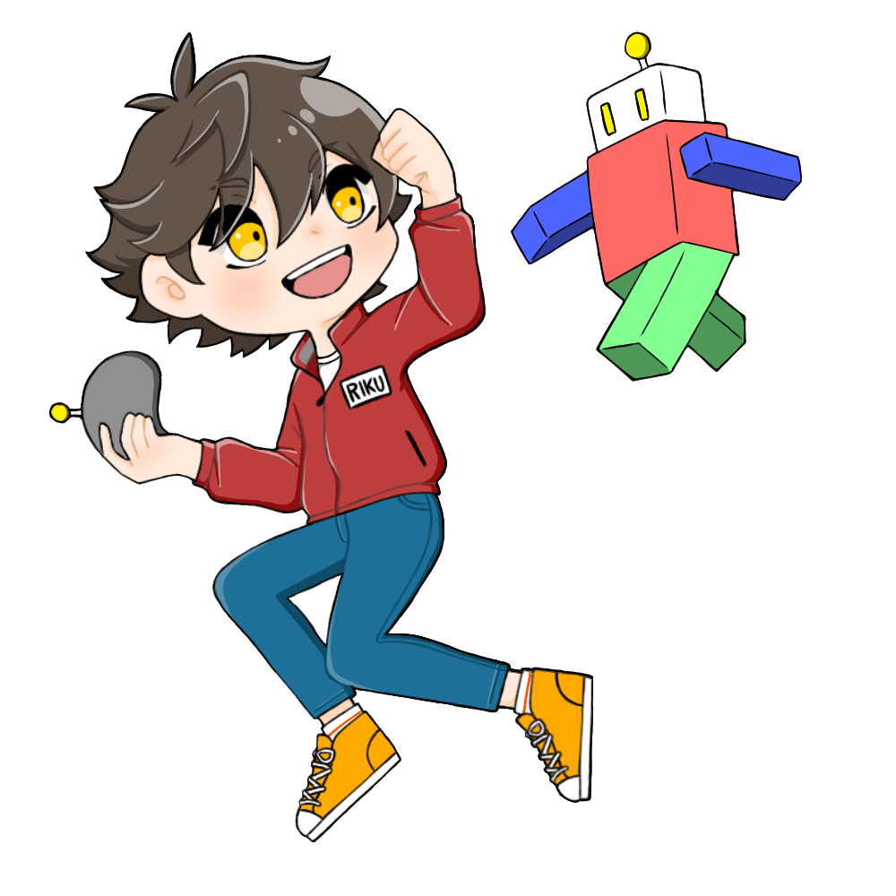

ものづくり育成プロジェクトのホームページへようこそ！
ものづくり育成プロジェクトとは？
ものづくり育成プロジェクトでは、地域の子どもたちにものづくりの楽しさを知ってもらうことを目的に
クリエイトセンター独自で行っていた活動を引き継ぎ、学生と地域のつながりを深めるために活動していきます。
具体的な内容としては地域の子どもたちとともにものづくり教室を行うことで、
地域と大阪産業大学のつながりをものづくりを通して深めていくことを目的にしています。
学生は子どもたちにものづくりの楽しさを教えながら人に教えるということの難しさや楽しさを学びつつ、
学生自身のものづくりの意欲を向上させていきたいと考えています。
ものづくり教室とは？
ものづくり教室は、子どもたちが楽しくものづくりを学ぶことを目的としております。
毎回学生が子どもたちに楽しくて学べるものを出し合って考え、それを出し物にしています。
ものづくり教室開催情報
2月ものづくり教室
カラフル砂絵時計 作成動画
お待たせしました。
カラフル砂絵時計の作成動画になります。
動画内の注意事項を守りながら、楽しんで作成してください。
また、作業の進捗に合わせて、動画を一時停止しながら作業を進めていくことをおすすめいたします。
作成が終わりましたらアンケートへのご協力をお願いします。
アンケート：カラフル砂絵時計に関するアンケート（締め切り期日：3月31日木曜日）
ご応募ありがとうございました
お問い合わせはメールからお願いします